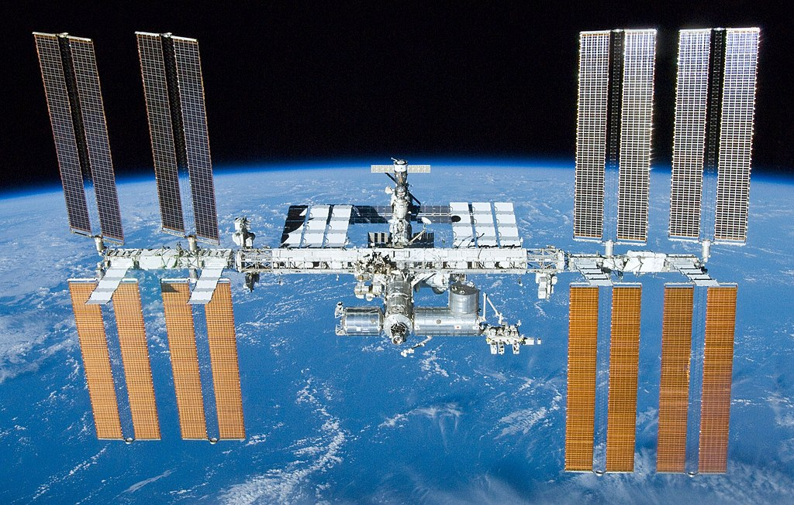

Observando pasajes de la Estación Espacial Internacional desde casa
¿Sabes que en este mismo momento, mientras desayunas o vas a la escuela, una instalación científica internacional tripulada está dando vueltas alrededor de la Tierra?

En esta Estación, hombres y mujeres de diferentes nacionalidades se rotan para llevar adelante experimentos que son de utilidad para toda la humanidad.
Puedes saludarlos desde el fondo de tu casa, ya que es posible verlos en el cielo cuando pasan sobre tu localidad.
La tripulación no te verá, pues estarán a centenas de kilómetros de distancia, pero tú puedes señalar al cielo y decir a quien te acompañe:
"¿Ves allí, ese punto? Ahí arriba hay gente trabajando".
Acompáñanos y te contaremos cómo ver desde tu casa la EEI.